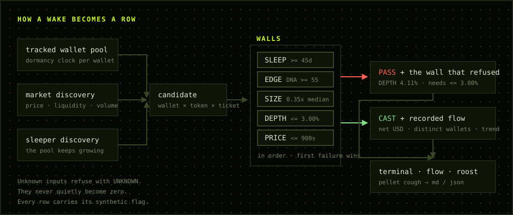

SILENCE IS
THE SIGNAL.
An active wallet trades constantly, so any one entry says almost nothing. A wallet silent for a year that suddenly signs something has made a decision. PELLET watches for exactly that, runs it through five readable walls, and prints the wall that refused it.
git clone https://github.com/0xwast3/pellet && npm i && npm start
THE TERMINAL IS THE PRODUCT.
The site explains it, GitHub ships it. Everything you need to make a call sits on one screen: the stream on the left, the full reasoning for the selected row on the right, the flow desk underneath. Nothing hides behind a keystroke.
The web terminal below runs the same wall logic as the CLI, file for file. On a static host there is no chain to read, so every row is marked synthetic — in the header, in the JSON, and in any pellet you export.
| WALLET | SILENT | DNA |
|---|
The pool is not a frozen list. Wallets keep crossing the threshold, so the terminal keeps finding new sleepers for as long as it runs.
ONE WAKE. FIVE WALLS. ONE REFUSAL.
A score is context, not permission. The walls are evaluated in order and
the first one that fails owns the refusal — so you never get a verdict
without the reason attached. Move the dials and watch the box flip.
This runs the real evaluate(), not a mock-up of it.
Unknown never becomes zero. Drag liquidity to its floor and DEPTH refuses with UNKNOWN rather than quietly reading 0% and passing.
NET FLOW IS THE HEADLINE. THE WALLET COUNT IS THE GUARD.
One wallet cycling the same position eight times produces a large number and means nothing. A token does not rank until at least two distinct tracked wallets have touched it.
Reductions subtract, so a token can rank negative. That is a result, not a gap in the data.
| TOKEN | NET FLOW | WALLETS | AVG | TREND |
|---|
NOTHING IS DIGESTED.
An owl swallows its prey whole and coughs up a pellet: a dry, readable record of everything it ate, bones included.
That is the export. pellet cough <handle> brings one
wallet back up whole — dormancy, record, every wake, and
every refusal it was ever given, with the wall that caused it.
Pick a sleeper and read one.
CLONE. CHECK. RUN.
Everything is available from the CLI. No browser wallet is required to open the product or inspect the data.
INSTALL
git clone <repo> cd pellet npm install npm run doctor
TERMINAL
npm start
# two-pane wake terminal
WAKE
pellet wake --cast-only
# raw scrolling feed
FLOW
pellet flow --top 15
# ranked smart desk
READ THE CODE. RUN THE TERMINAL.
The repository holds the CLI, the providers, the walls, the pellet export, the docs, thirty tests and this website. The site imports the wall logic from the same file the terminal uses, so a verdict here and a verdict there cannot drift apart.
